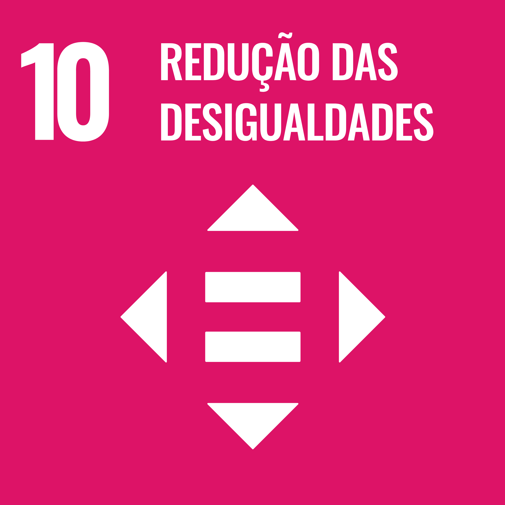

Quem Somos?
Somos um projeto de extensão da UTFPR, campus Cornélio Procópio, desde 2018. Nosso objetivo é promover a sustentabilidade, a inclusão e a solidariedade por meio de ações que contribuam para a melhoria da comunidade, alinhadas aos Objetivos de Desenvolvimento Sustentável da ONU.4 eixos principais:
- Ações de Inclusão e Solidariedade;
- Oficinas de Sustentabilidade com Impacto Social;
- Palestras e Eventos;
- Divulgações Digitais de Conscientização Socioambiental.
Objetivos de Desenvolvimento Sustentável que o projeto abrange (saiba mais)
ODS 4 - Educação de Qualidade
 Garantir o acesso à educação inclusiva, de qualidade e equitativa, e promover oportunidades de
aprendizagem ao longo da vida para todos.
Garantir o acesso à educação inclusiva, de qualidade e equitativa, e promover oportunidades de
aprendizagem ao longo da vida para todos.
- 4.7 - Até 2030, garantir que todos os alunos adquiram conhecimentos e habilidades necessárias para promover o desenvolvimento sustentável, inclusive, entre outros, por meio da educação para o desenvolvimento sustentável e estilos de vida sustentáveis, direitos humanos, igualdade de gênero, promoção de uma cultura de paz e não violência, cidadania global e valorização da diversidade cultural e da contribuição da cultura para o desenvolvimento sustentável.
ODS 10 - Redução das desigualdades
 Reduzir as desigualdades no interior dos países e entre países.
- 10.2 - Até 2030, empoderar e promover a inclusão social, econômica e política de todos, independentemente da idade, gênero, deficiência, raça, etnia, origem, religião, condição econômica ou outra.
ODS 11 - Cidades e comunidades sustentáveis
 Tornar as cidades e comunidades mais inclusivas, seguras, resilientes e sustentáveis.
Tornar as cidades e comunidades mais inclusivas, seguras, resilientes e sustentáveis.
- 11.6 - Até 2030, reduzir o impacto ambiental negativo per capita das cidades, inclusive prestando especial atenção à qualidade do ar, gestão de resíduos municipais e outros.
ODS 12 - Consumo e produção responsáveis
 Garantir padrões de consumo e de produção sustentáveis.
Garantir padrões de consumo e de produção sustentáveis.
- 12.2 - Até 2030, alcançar a gestão sustentável e o uso eficiente dos recursos naturais.
- 12.4 - Até 2020, alcançar o manejo ambientalmente saudável dos produtos químicos e todos os resíduos, ao longo de todo o ciclo de vida destes, de acordo com os marcos internacionais acordados, e reduzir significativamente a liberação destes para o ar, água e solo, para minimizar seus impactos negativos sobre a saúde humana e o meio ambiente.
- 12.5 - Até 2030, reduzir substancialmente a geração de resíduos por meio da prevenção, redução, reciclagem e reuso.
- 12.8 - Até 2030, garantir que as pessoas, em todos os lugares, tenham informação relevante e conscientização para o desenvolvimento sustentável e estilos de vida em harmonia com a natureza.
ODS 13 - Ação contra a mudança global do clima
 Adotar medidas urgentes para combater as alterações climáticas e os seus impactos.
Adotar medidas urgentes para combater as alterações climáticas e os seus impactos.
- 13.3 - Melhorar a educação, aumentar a conscientização e a capacidade humana e institucional sobre mitigação, adaptação, redução de impacto e alerta precoce da mudança do clima.